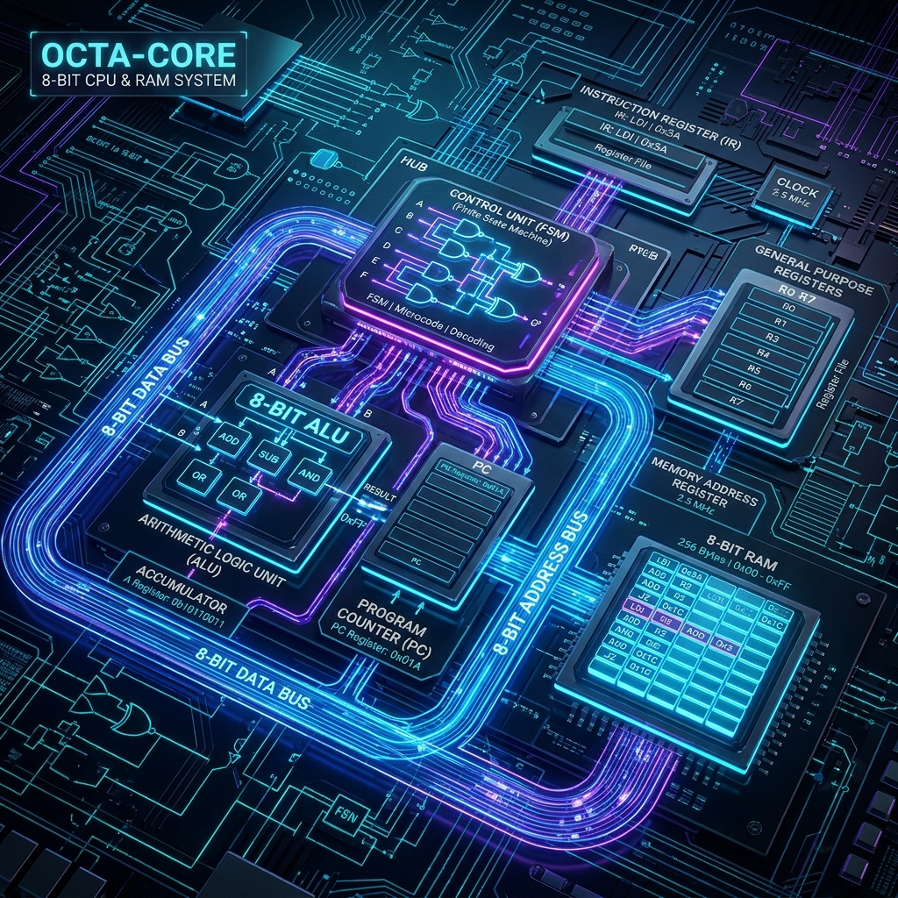

Welcome to the grand finale of our Building an 8-bit Computer from Scratch series! Over the past seven parts, we have designed the individual building blocks of our CPU: the ALU, the registers, the Program Counter (PC), RAM, and the Finite State Machine (FSM) control logic. Today, we pull it all together into a unified, Turing-complete architecture. We'll explore datapath routing, bus contention, and finally, present a complete JSON blueprint you can load directly into SQGATE.

The Master Datapath
The datapath is the central nervous system of any CPU. It's the network of buses and wires that shuttles data between the ALU, registers, and memory. In our 8-bit architecture, we employ a shared 8-bit data bus. This design choice mimics classic microprocessors like the 6502 or Z80, minimizing the sheer number of physical wires (or simulation nets) required, at the cost of requiring careful control over who gets to "talk" on the bus at any given moment.
Bus Contention and Tri-State Buffers
A shared bus introduces a critical problem: bus contention. If the A Register and the RAM both try to output data to the bus simultaneously, their signals will clash. In a physical circuit, this can cause a short circuit and let out the "magic smoke." In SQGATE, it results in undefined logic states (often represented as 'X').
To prevent this, every component connected to the shared data bus must output through a tri-state buffer. A tri-state buffer has three states: HIGH (1), LOW (0), and High-Impedance (Z). When the buffer's enable pin is low, its output is in the High-Z state, effectively disconnecting it from the bus. The Control Unit (our FSM) is responsible for ensuring that exactly one tri-state buffer is enabled at any given clock cycle.
Control Word and the Finite State Machine
Our CPU executes instructions by stepping through a sequence of micro-operations. These steps are orchestrated by the FSM, which outputs a Control Word. The Control Word is a wide bit-vector (in our case, 16 bits) where each bit directly drives a specific control signal in the datapath, such as:
HLT: Halt the clockMI: Memory Address Register InRI: RAM In (Write Enable)RO: RAM Out (Enable RAM tri-state buffer)IO: Instruction Register OutII: Instruction Register InAI: A Register InAO: A Register OutEO: ALU Out (Enable ALU tri-state buffer)SU: ALU Subtract ModeBI: B Register InOI: Output Register InCE: Counter Enable (PC Increment)CO: PC OutJ: Jump (PC In)
The Fetch-Decode-Execute Cycle
Every instruction follows the fundamental Fetch-Decode-Execute cycle. Let's trace the micro-operations for a simple ADD instruction:
T0: Fetch Address
The cycle begins by fetching the instruction from memory. The FSM asserts CO (PC Out) and MI (Memory Address Register In). The PC places its current value (the address of the next instruction) onto the bus, and the Memory Address Register (MAR) latches it.
T1: Fetch Instruction & Increment PC
Next, the FSM asserts RO (RAM Out), II (Instruction Register In), and CE (Counter Enable). The RAM places the instruction byte onto the bus (addressed by the MAR), the Instruction Register latches it, and the PC increments to point to the next byte.
T2: Decode
The top 4 bits of the Instruction Register represent the opcode. These bits are fed directly into the FSM. The FSM decodes the opcode (e.g., 0001 for ADD) and determines the sequence of execute steps.
T3-T5: Execute (ADD)
For an ADD instruction (which adds a value from RAM to the A Register), the execute steps might look like this:
- T3: The FSM asserts
IO(Instruction Register Out, placing the operand's memory address on the lower 4 bits of the bus) andMI(MAR In). - T4: The FSM asserts
RO(RAM Out) andBI(B Register In). The value from memory is fetched into the B Register. (The A register already holds the first operand). - T5: The ALU constantly computes A + B. The FSM asserts
EO(ALU Out) andAI(A Register In). The sum is placed on the bus and latched back into the A Register.
After T5, the sequence counter resets, and the CPU begins fetching the next instruction at T0.
Turing Completeness
What makes this architecture Turing-complete? The defining characteristic is the ability to perform conditional branching. In our CPU, this is handled by the JC (Jump if Carry) and JZ (Jump if Zero) instructions.
The ALU outputs two flag bits: Carry Out (C) and Zero (Z). These flags are latched into a Flags Register on every ALU operation. The FSM monitors these flags. When it encounters a JC instruction during decode, it checks the C flag. If C is 1, the FSM proceeds with the jump micro-operations (asserting IO and J to load a new address into the PC). If C is 0, the FSM skips the jump steps and immediately resets the sequence counter.
This conditional execution, combined with memory read/write and basic arithmetic, provides the computational foundation to simulate any Turing machine (given sufficient time and memory).
The Final SQGATE Schematic
Putting it all together in the SQGATE simulator requires careful wiring. The beauty of SQGATE's component-based system is that we can encapsulate complex sub-circuits (like the ALU or an 8-bit Register) into custom chips, keeping the top-level schematic clean.
Below is a snippet of the JSON representation for the top-level 8-bit architecture in SQGATE. This JSON defines the placement of the major components and the critical bus connections.
{
"name": "8-Bit_Computer_Top_Level",
"components": [
{ "type": "Clock", "id": "clk1", "x": -400, "y": 300 },
{ "type": "ROM", "id": "rom_microcode", "x": -200, "y": 100, "data": "hex_microcode_here" },
{ "type": "Custom", "name": "8Bit_ALU", "id": "alu1", "x": 100, "y": -100 },
{ "type": "Custom", "name": "8Bit_Register", "id": "regA", "x": 100, "y": -200 },
{ "type": "Custom", "name": "8Bit_Register", "id": "regB", "x": 100, "y": 0 },
{ "type": "RAM8", "id": "main_ram", "x": -100, "y": 300 },
{ "type": "Custom", "name": "Program_Counter", "id": "pc1", "x": -100, "y": 450 },
{ "type": "TriStateBuffer8", "id": "buf_alu", "x": 250, "y": -100 },
{ "type": "TriStateBuffer8", "id": "buf_ram", "x": 50, "y": 300 },
{ "type": "TriStateBuffer8", "id": "buf_pc", "x": 50, "y": 450 }
],
"wires": [
{ "from": "clk1.out", "to": "pc1.clk" },
{ "from": "clk1.out", "to": "regA.clk" },
{ "from": "clk1.out", "to": "regB.clk" },
{ "from": "regA.out", "to": "alu1.a" },
{ "from": "regB.out", "to": "alu1.b" },
{ "from": "alu1.out", "to": "buf_alu.in" },
{ "from": "buf_alu.out", "to": "bus.main" },
{ "from": "rom_microcode.out_EO", "to": "buf_alu.en" },
{ "from": "bus.main", "to": "regA.in" },
{ "from": "rom_microcode.out_AI", "to": "regA.load" }
]
}This JSON snippet highlights the core philosophy of our design: a central bus (bus.main) heavily managed by tri-state buffers (buf_alu, buf_ram) which are strictly controlled by the FSM's microcode ROM (rom_microcode).
Conclusion
Building an 8-bit computer from fundamental logic gates is an immense undertaking, but breaking it down into modular components—ALU, Registers, RAM, and FSM—makes it entirely achievable. By understanding datapath routing and bus contention, you gain a deep appreciation for the intricate dance of electrons occurring billions of times a second inside modern processors.
You can load the full, simulated 8-bit computer into SQGATE right now. Try writing a simple assembly program, convert it to machine code, load it into the RAM component, and watch your CPU execute it step-by-step!
Thank you for following along with this series. Happy building!